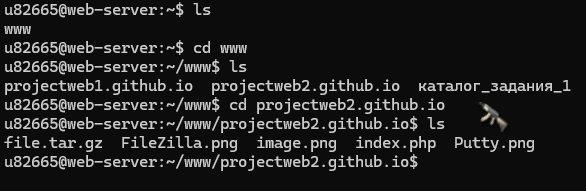
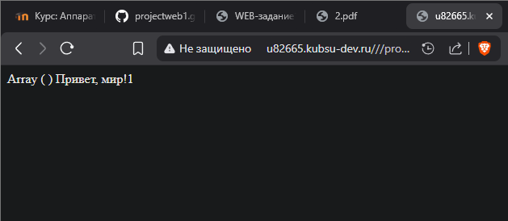
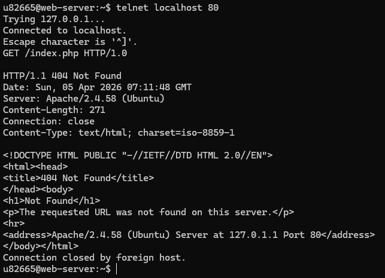
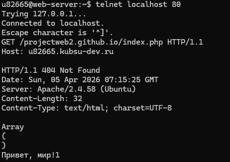
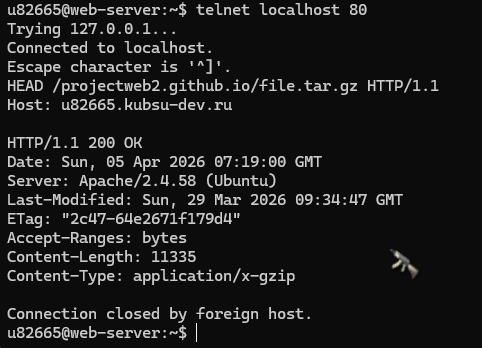
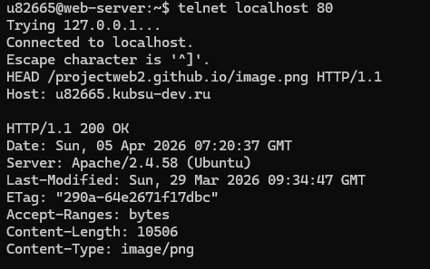
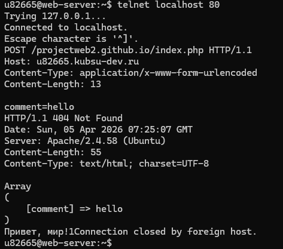
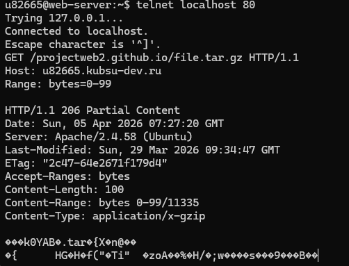
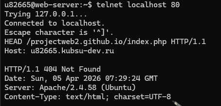

Ход работы
Проверка загрузки файлов в браузере из моего учебного домена

Проверка работоспособности index.php

Установлено telnet-соединение с сервером kubsu-dev.ru на порт 80 и отправлен HTTP-запрос методом GET HTTP/1.0.
Вывело html код страницы. Указание хоста здесь необязательно.

Установлено telnet-соединение с сервером kubsu-dev.ru на порт 80 и отправлен HTTP-запрос методом GET HTTP/1.1.
Вывело "Array ( )" и "Привет, мир!1". Указание хоста здесь обязательно.

Установлено telnet-соединение с сервером kubsu-dev.ru на порт 80 и отправлен HEAD-запрос.
Сервер ответил кодом 200 OK, в заголовках ответа содержались информация о дате последнего изменения,
ETag, размер файла и тип содержимого.

Установлено telnet-соединение с сервером kubsu-dev.ru на порт 80 и отправлен HEAD-запрос.
Сервер ответил кодом 200 OK, и вывел разрешение файла image.png

Для отправки данных (комментария) на сервер используется метод POST.
В протоколе HTTP это самый сложный запрос, так как нужно вручную рассчитать длину передаваемых данных и указать тип контента.
Допустим, мы отправляем поле comment со значением hello. Строка будет выглядеть так: comment=hello.
POST: Метод для отправки данных. Content-Type: application/x-www-form-urlencoded: Стандартный тип для HTML-форм.
Он сообщает серверу, что данные придут в формате ключ=значение. Content-Length: 13: Самая важная часть.
Если это число будет меньше реального количества символов в строке comment=hello, сервер обрежет данные.
Если больше — будет бесконечно ждать продолжения.

Для загрузки только части файла используется заголовок Range.
Это стандартный механизм HTTP для докачки файлов или стриминга видео.
Range: bytes=0-99: Мы запрашиваем диапазон байтов. Поскольку отсчет идет с нуля, первые 100 байт — это интервал от 0 до 99 включительно.
Ожидаемый статус: Если сервер поддерживает частичные запросы (что обычно для современных серверов),
вы получите ответ 206 Partial Content вместо привычного 200 OK.
Что вы увидите в ответе: Заголовок Content-Range: Сервер подтвердит, какую часть файла он отдает.
Заголовок Content-Length: Будет равен точно 100.
Тело ответа: Вместо читаемого текста вы увидите бинарные данные архива .tar.gz. Это нормально, так как это сжатый файл.

С помощью метода HEAD можно получить данные о кодировке php файла. В данном случае это charset=UTF-8
